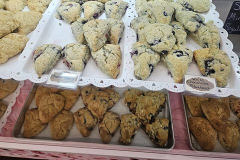

Delightful & elegant since 2012
Lally’s Cakes & Sweets are delightful and elegant, with party dessert specialties and over 100 flavors.

Our story
In 2012, I started baking out of my house. I wanted to be there for our 6 children, and this gave me that opportunity. I’m self-taught and pride myself on making things homemade.
For 13 years I baked by myself, learning every step of the way and trying to be better than I was the day before. I made so many mistakes, adjusted and moved on.
Then an opportunity opened, and I was able to move into the Shillington Farmers Market. That was a big change. My daughter, Destiny V. Lally, wanted to become a partner, and here we are, thriving and loving it!
We have so much support from family and the community. We love you all and can’t thank you enough for the support and love. We look forward to baking smiles for years to come.
— Kimberly Lally, owner & baker
We’re known for party dessert specialties: custom cakes, cupcakes, cookies and trays, with a flavor lineup of over 100 options.
Stop by our stand when we’re open, or reach out by phone, email, or Facebook Message to place an order.
Dessert tables, celebration cakes, and trays planned around your event.
A huge menu of flavors so every guest finds a favorite.
Years of experience baking for local families and gatherings.
Shillington Farmers Market · Berks County.
Ready to order?
Call, email, or message us on Facebook with your event date and ideas. We’ll help with flavors, sizes, and a quote.